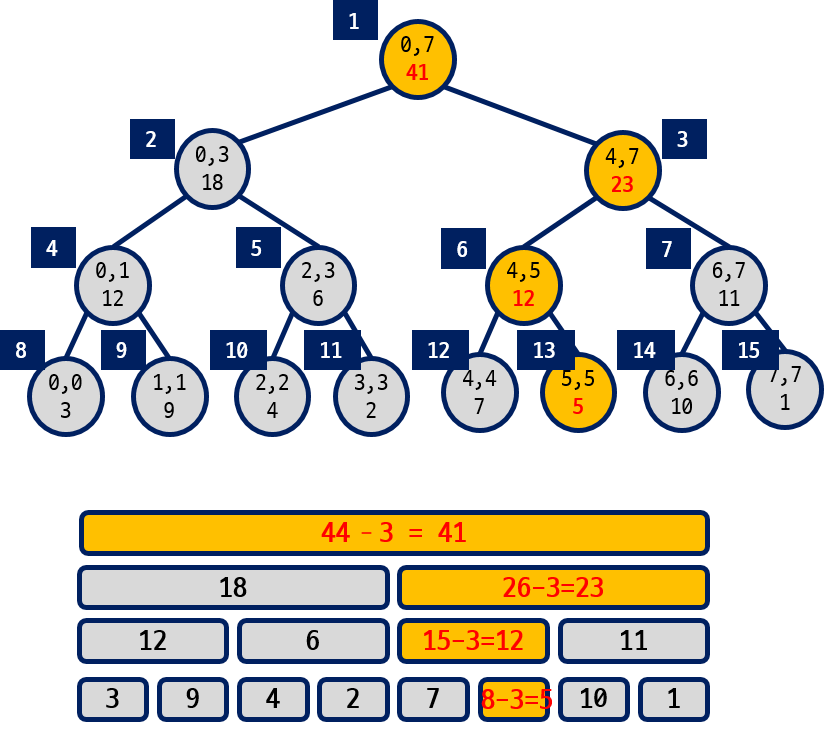

Segment Tree
In computer science, a segment tree, also known as a statistic tree, is a tree data structure used for storing information about intervals, or segments. It allows querying which of the stored segments contain a given point. It is, in principle, a static structure and cannot be modified once built. A similar data structure is the interval tree. A segment tree for a set I of n intervals uses O(n log n) storage and can be built in O(n log n) time. Segment trees support searching for all the intervals that contain a query point in time O(log n + k), k being the number of retrieved intervals or segments.[1]
Construct Segment tree | O(n log n)
func segment_tree(arr []int) []int {
stree := make([]int, np2(len(arr)) * 2 - 1)
build_tree(arr, stree, 0, len(arr)-1, 0)
return stree
}
func build_tree(arr, stree []int, l, h, pos int) {
if l == h {
stree[pos] = arr[l]
return
}
m := (l + h) / 2
build_tree(arr, stree, l, m, pos*2+1)
build_tree(arr, stree, m+1, h, pos*2+2)
stree[pos] = min(stree[pos*2+1], stree[pos*2+2])
}
// if a is not power of 2, find the next power of 2
func np2(a int) int {
ans := 1
for ans < a {
ans *= 2
}
return ans
}
func min(a, b int) int {
if a < b { return a}
return b
}The construction of a segment tree involves recursively dividing the array into smaller segments and building a binary tree structure to represent those segments. Here's a general overview of how a segment tree is constructed:
Base Case:
The base case for constructing a segment tree is when you have a single element. Each leaf node of the segment tree corresponds to a single element in the array.
Divide and Conquer:
Start by dividing the array into two equal (or nearly equal) halves. Recursively build segment trees for both halves.
Combine:
After the subsegment trees are constructed, you need to combine the information from child nodes to build the parent nodes. The value of a parent node typically represents an aggregation of its children's values. For example, if you're building a segment tree to find the minimum value in a range, the parent node would store the minimum of its two child nodes' values.
Repeat:
Continue this process recursively until you build the root of the segment tree, which represents the entire array.
Find minimum of a segment | O(log n)
func main() {
stree := segment_tree([]int{-1,3,4,0,2,1})
// find minumum from index 2 to 4
min_range(stree, 2,4, 0, 5, 0) // 0
// find minimum from index 0 to 4
min_range(stree,0,4,0,5,0) // -1
}
func min_range(stree []int, ql, qh, l, h, pos int) int {
// if query range >= current range return value of current range
if ql <= l && qh >= h {
return stree[pos]
} else if ql > h || qh < l {
// if query range is outside current range return max
return int(^uint(0) >> 1)
}
// if query range partial overlap, compare with left and right subtree
m := (h + l) / 2
return min( min_range(stree, ql, qh, l, m, pos*2+1),
min_range(stree, ql, qh, m+1, h, pos*2+2) )
}To query a range in a segment tree, we make comparision with the range of the original array. Here 3 cases can happen.
1. If the query range is overlap (query range contain current range), then return the value of segment tree at this index
2. If the query range is outside current range, then return a very large number.
3. Else continue compare with left and right substree.